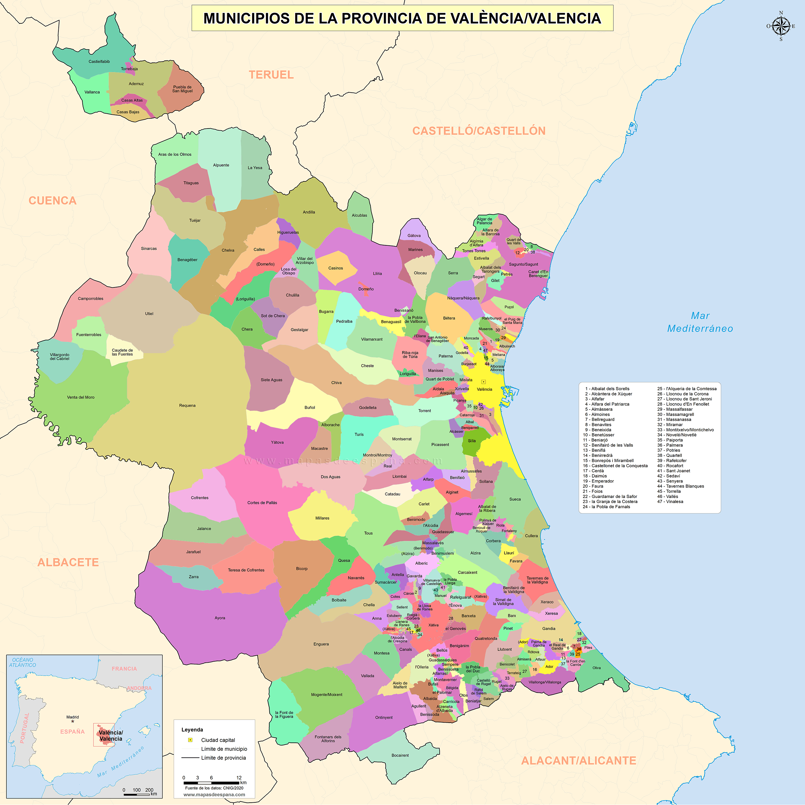

Ciudad de las Artes y las Ciencias

Complejo arquitectónico y cultural diseñado por Santiago Calatrava. Es uno de los espacios más representativos de la ciudad.
Ubicación: Avenida del Profesor López Piñero


Complejo arquitectónico y cultural diseñado por Santiago Calatrava. Es uno de los espacios más representativos de la ciudad.
Ubicación: Avenida del Profesor López Piñero

Edificio histórico declarado Patrimonio de la Humanidad por la UNESCO. Representa la importancia comercial de Valencia en la Edad Media.
Ubicación: Plaza del Mercado

Mercado modernista considerado uno de los más grandes de Europa. Destaca por su arquitectura, sus vidrieras y la gran variedad de productos locales.
Ubicación: Plaza del Mercado

Espacio natural protegido conocido por su lago y sus arrozales. Es un lugar ideal para disfrutar de la naturaleza y los atardeceres.
Ubicación: Sur de la ciudad de Valencia
